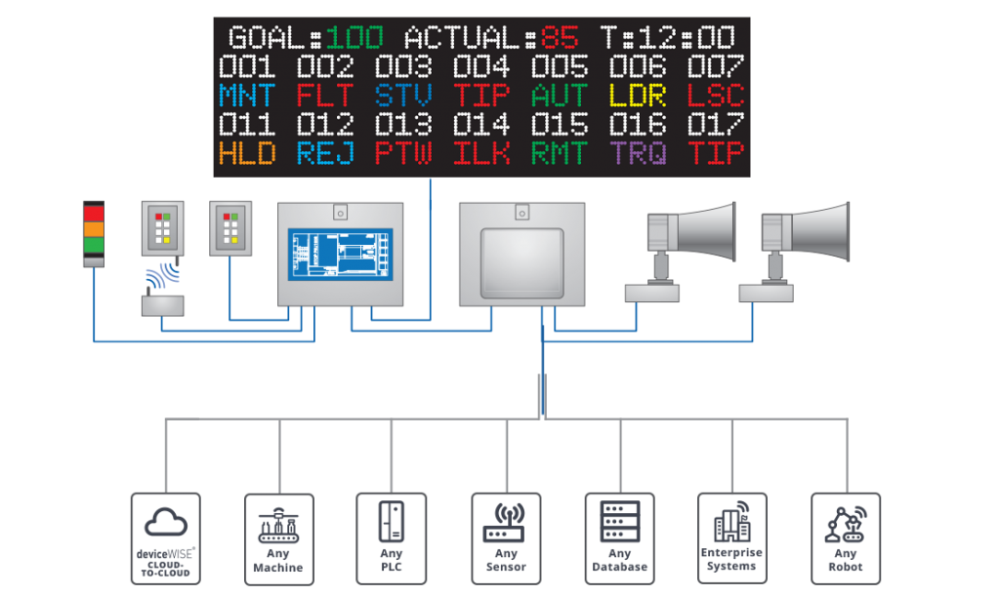
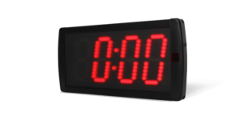

Display Details
Our LED display panels are designed for high visibility in every environment. Here, you can customize the settings for your display, such as adjusting the brightness, scrolling speed, and message content. Whether used indoors or outdoors, our displays offer seamless integration with multiple control systems.
Display Types
Full Color LED
Full color LED displays provide vibrant, high-resolution graphics and text. They are perfect for advertising, event promotions, and public signage. The displays can show rich, dynamic content in a variety of environments, including high ambient light areas.
Single Line Message Board
Single line message boards are ideal for displaying scrolling text messages in a compact format. These displays are commonly used for real-time notifications, alerts, or simple announcements in businesses, schools, and public spaces.
Clocks/Counters
LED clocks and counters are reliable tools for tracking time, events, or counting down to specific moments. Perfect for industrial settings, countdowns for events, or showing precise time in offices, lobbies, and public spaces.
Specifications
- Panel Size: 72x24
- Pixel Pitch: 0.65
- Brightness: 4000 nits
- Color: Full RGB
- Control Interface: USB, Ethernet, RS232
Features
- High contrast for bright environments
- Remote control and scheduling support
- Easy setup and maintenance
- Weather-resistant for outdoor use